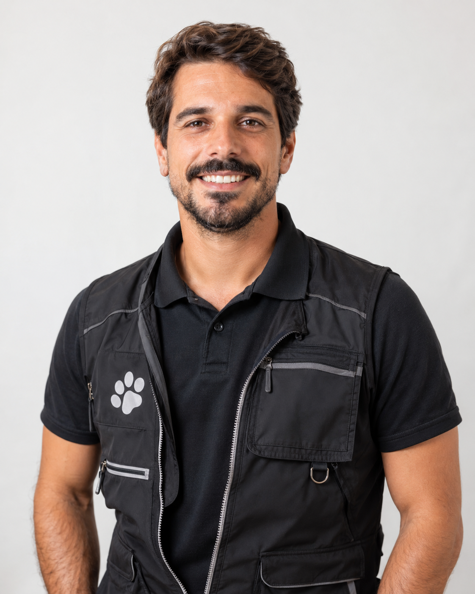
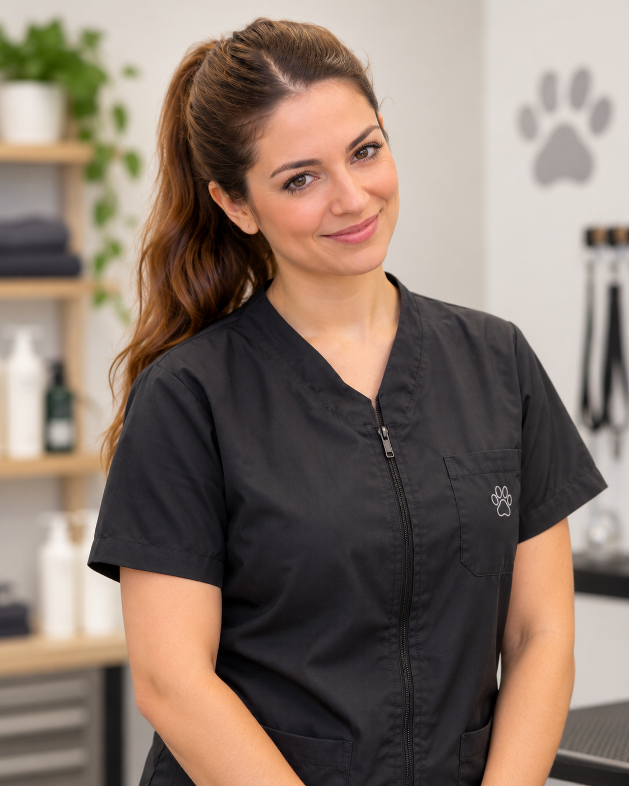

Dra. Ana Martins
Cargo: Médica Veterinária Diretora
Responsável pela supervisão clínica e acompanhamento diário de saúde dos hóspedes de quatro patas.
PetCare
Cuidados e serviços para animais de estimação
Conheça a nossa equipa dedicada, as nossas instalações de excelência em Vila Nova de Gaia e acompanhe-nos nas redes sociais.
Contamos com profissionais altamente qualificados e apaixonados pelo bem-estar animal:
Cargo: Médica Veterinária Diretora
Responsável pela supervisão clínica e acompanhamento diário de saúde dos hóspedes de quatro patas.

Cargo: Coordenador de Atividades e Treinador
Especialista em comportamento animal, dinamiza os passeios e as sessões de exercício e socialização.

Cargo: Especialista em Grooming e Bem-estar
Dedicada aos serviços de banho, tosquia e cuidados de higiene personalizados.
A unidade hoteleira da PetCare está estrategicamente situada em Vila Nova de Gaia, oferecendo um ambiente seguro, calmo e rodeado por zonas verdes.
Fique a par do dia a dia dos nossos hóspedes e veja mais fotografias e novidades nas nossas páginas oficiais: